All product names are trademarks of their owners and are used only to identify compatible devices. OrGigs is not affiliated with them.
OrGigs turns the M-VAVE SMK-37 Elite into a complete organ: tonewheel and 1960s combo organs, baroque and cathedral pipe organs, and French musette and tango bandoneon reeds. It plays on three manuals, has a full effects rack, and works as a MIDI router, mixer and SEQTRAK remote.
Panel buttons and controls are written as they are printed, like FX or NOTE RPT. The eight knobs are K1–K8, from left to right. The pads are numbered 1–8 on the top row and 9–16 on the bottom row. Text on the screen is written like ROTARY FAST. SCALE + K1 means: hold SCALE and turn K1.
About SCALE. SCALE is OrGigs's shift button. Held, it gives knobs, pads and buttons a second job, and the screen shows the second row of values (2ND in the button map).
The compact edition. OrGigs is designed around the Elite. A smaller edition of it runs on the M-VAVE FM-1, with its own manual: the same organ, effects and MIDI zones on four knobs and twelve buttons, without the insert effect, the master and the pad layouts. Both read each other's backups (chapter 7).
Five steps from power-on to a full organ sound.
To try another instrument, hold SCALE and press < or > (models 1–8). To keep what you've built, hold BT and press a pad: the whole instrument is stored in that performance setup.
Every control of the SMK-37 Elite and what OrGigs does with it.
A map of the controls, not to scale. Faders 1–4 sit above the first four button columns.
| Control | Always does |
|---|---|
| Keys | Play. They never switch anything, on any screen. |
| KNOB BANK | The next manual (and its MIDI zone): UPPER → LOWER → PEDAL, when you let go. In the mixer: channels 1–8 ↔ 9–16 |
| KNOB BANK + FADER BANK | HOME, pressed together: the upper manual, model 1, its first registration (Classic Jazz Lead), every coupler off, layout A (PERF A); the drawbar screen. The cloner stays as it is |
| FX · GLOBE · PARA | Open the FX pages, the MIDI screens, the mixer. Pressed again: back to the drawbars |
| ARP / PATCH | On the FX and MIDI screens: the previous / next page |
| SCALE | Shift. Pressed, it also shows the processor load, the battery and the pedal socket's reading, DSP 10% BAT 94% 4.09V PED 0 |
| PLAY · REC | Rotary brake · rotary slow ↔ fast. SCALE + REC: the manual through the rotary or past it |
| OCT− OCT+ | Octave of the keys, −2 … +3 |
| Fader 4 | Volume, everywhere |
| Faders 1–3 | Pick up: after the value changed elsewhere (another manual, a preset, a setup, a knob) a fader does nothing until it reaches it. Meanwhile the message line says which way, for example REVERB SEND: FADER UP TO 64 |
| Sustain pedal | Holds the notes of the keys, on the organ and over MIDI (CC 64) (chapter 4) |
| Pitch / mod wheel | Pitch bend (or rotary kick) · rotary slow / fast (chapter 4) |
| SCALE + pad · BT + pad | Recall · store performance setup 1–16 (not in the mixer, the FX pages and YST) |
| SCALE + GLOBE | The panel lights and the backup (chapter 12) |
| SCALE + PATCH | Panic: all notes off, inside and on all 16 MIDI channels |
The drawbar screen is where you play (the top bar says PERF A … PERF D: the bank PERFORMANCE and its layout). Here the buttons do:
| Button | Function | With SCALE held |
|---|---|---|
| < > | The previous / next registration of the drawbar list (when you let go) | The previous / next instrument model |
| KNOB BANK | The next manual | The next panel layout, A → B1 → B2 → C → D (chapter 4) |
| < + > held | K1 turns through the drawbar list, K2 through the models, K3 through the panel layouts (A to D; at either end it stops), K4 · K5 the SEQTRAK sound (chapter 11). Each step is active at once; a model or layout shows its name big over the screen. The pads: the cloner's channels (chapter 10); once K1–K3 turned, the layout's own pads, as they now are | — |
| ARP / PATCH | Drawbar 9 all the way in / out. Lit: drawbar 9 is in (0–3) / out (4–8) | PATCH: panic |
| CHORD | Chord memory: hold, play a chord, let go. A short press: off and on again (chapter 4) | — |
| NOTE RPT | Vibrato / chorus of the manual on and off (the tremulant on pipe and reed models) | — |
| PARA | The MIDI mixer (chapter 9) | — |
| FX | The FX pages (chapter 8) | — |
| GLOBE | The MIDI screens (chapter 10) | The panel lights |
| FADER BANK | The next panel layout, A → B1 → B2 → C → D → A, its name big over the screen. On any other screen: back to the drawbars first | — |
| BT | Tap: store the manual's drawbars in a user slot of the list. Hold + pad: store the performance setup | — |
| SEQ | Coupler II/I on and off (the upper keys also play the lower registration) | — |
| PLAY · REC | Rotary brake · slow ↔ fast | The manual through the rotary or not |
The FX, mixer, lights and MIDI screens share one layout:
The battery shows at the right end of every top bar. Below 20 % it turns red; below 10 % the message line warns BATTERY LOW, again every five minutes. SCALE shows the charge and the voltage. On the cable it reads full (charging raises the voltage). The percentage follows a lithium cell's discharge curve, with empty taken as 3.40 V.
The drawbar screen, and how the knobs, pads, faders and wheels play the organ.
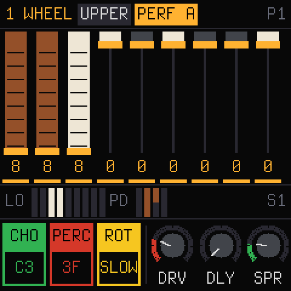
As in layout A, the factory layout (the next section has the others):
| Control | Drawbar |
|---|---|
| K1–K8 | Drawbars 1–8 of the manual. On the pedal: K1–K4 the four stops |
| Fader 1 | Drawbar 9, the way a drawbar is pulled: up = in (0), down = out (8) |
| Top pad 1–8 | Pushes the drawbar of its column all the way in (0) |
| Bottom pad 9–16 | Pulls the drawbar of its column all the way out (8) |
| ARP / PATCH | Drawbar 9 in / out |
The pads show the drawbars: each column is one drawbar, its colours tell how far it is out. In the factory colours (RED-GLOW) one red light moves down the column as the drawbar comes out: pushed in, the top pad is bright red; all the way out, the bottom pad; in between both share it, in 9 steps. Chapter 12 has the other colour schemes. On the pedal, columns 1–4 show its four stops.
KNOB BANK chooses the manual. The faders act only when you move them, and they pick up: after a setup is recalled or another manual chosen, fader 1 changes drawbar 9 once it has reached the drawbar's position.
The pads can do more than the drawbars. FADER BANK (or SCALE + KNOB BANK) on the drawbar screen chooses the layout: A FULL DRAWBARS → B1 DRAWBARS + LIVE → B2 DRAWBARS + MIDI → C KNOBS + 16 PADS → D SOUND DESIGN. Or hold < and > together and turn K3, both ways, wherever you are on the organ's screens. The top bar shows it (PERF B1). Each performance setup keeps its layout: store a setup with BT + pad in layout C, and recalling it brings C back. In every layout K1–K8 are drawbars 1–8 on the drawbar screen and fader 1 is drawbar 9.
| Layout | Top pads 1–8 | Bottom pads 9–16 |
|---|---|---|
| A Full drawbars | Drawbar 1–8 in (0) | Drawbar 1–8 out (8) |
| B1 Drawbars + live | The live switches | Drawbar 1–8 out (8), or in (0) when it is out at all |
| B2 Drawbars + MIDI | The manual, the coupler, the zone's CC filters, MIDI out, internal sound (as C's bottom row) | As B1 |
| C Knobs + 16 pads | The live switches | The manual, the coupler, the zone's CC filters in and out, its MIDI out and its internal sound |
| D Sound design | The live switches | The pages FX, ROTARY, EFFECT, MASTER, MIXER on the knobs, and the manual |
In the order and the colours of the drawbar screen's strip. A switch that is on lights bright, one that is off glows dim in its colour.
| Pad | Function |
|---|---|
| 1 | Vibrato / chorus of the manual on and off. Hold it and turn K1: its type, V1 … C3. On the pipe and reed models: the tremulant, K1 its depth |
| 2 | Percussion on and off (tonewheel). On the other models: the coupler, in turn (see “The coupler”) |
| 3 | The percussion's kind in turn: 2ND FAST → 2ND SLOW → 3RD FAST → 3RD SLOW → 4TH FAST → 4TH SLOW (the 2', up to the highest tonewheel, B, before it folds back). While it is off, this chooses what pad 2 brings back. Hold it and turn K1: left SOFT (6 dB quieter), right NORMAL. Hold it and turn K3: its decay (see the tonewheel percussion, “Your own decay”). Dark on the other models |
| 4 | Rotary slow ↔ fast. The pad pulses with the horn, once a turn: you see it speed up and slow down. Steady and dim when the manual goes past the rotary |
| 5 | Rotary stop (again: slow) |
| 6 | Drive of the manual on and off (back to where it was). Hold it and turn K6: the manual's drive |
| 7 | Delay send of the manual on and off (back to where it was). Hold it and turn K7: the delay time; K8: the manual's delay send |
| 8 | The insert effect on and off: the effect last chosen on the EFFECT page. Hold it and turn K8: the effect's MIX |
Pads 1, 3, 6, 7 and 8 switch when you let go, so holding them for a knob does not switch them.
Each pad is the drawbar of its column: one at 0 comes out to 8, one out at all goes in to 0. The colours are those of layout A's bottom row.
B2 is B1 with layout C's bottom row on top: pads 1–3 the manual, 4 the coupler (held + pad 1–3: the manuals coupled), 5 FCCI, 6 FCCO, 7 MIDI OUT, 8 INT. Everything as described for layout C below, one row up. Use it when you play over MIDI and want the drawbars under your fingers.
| Control | Function |
|---|---|
| Fader 1 | Drawbar 9 (up = in) |
| Fader 2 | Reverb send of the manual |
| Fader 3 | The MIDI out's sum: every channel's volume of the MIDI mixer (CC 7) times this, sent to the channels in use (the SEQTRAK's tracks too). It starts at the top: move it all the way up once to pick it up. On the YST screen, faders 1–3 are the touch sliders (chapter 11) |
| Fader 4 | Volume |
| Pitch wheel | What the WHEELS page gives it (chapter 8). On AUTO: what the BEND setting says (zone screen, K8; chapter 10): PITCH bends ±2 semitones, ROTARY makes up = rotary fast while held, down = tutti boost. The reed models always bend |
| Sustain pedal | Held down, the keys you let go keep sounding, on the organ and on the manual's MIDI channels, until you lift it. It sends CC 64 on the manual's channels (also to the SEQTRAK) |
| Mod wheel | What the WHEELS page gives it (chapter 8). It learns its travel: move it once all the way up and down after switching on. On AUTO: rotary slow (low half) / fast (high half); with BEND ROTARY: slow / brake / fast. On the reed models: the bellows. While the insert effect is WAH-WAH: its pedal |
Plug the pedal in before you switch on, and don't press it then. Pedals switch one way or the other depending on the make; OrGigs takes the way it rests at power-on as up. If it works the wrong way round, switch off and on again with the pedal up. SCALE shows the socket's reading (PED): it should change a lot when you press the pedal.
Hold CHORD, play a chord on the keys (up to eight notes) and let go of CHORD: CHORD MEMORY NOTES 4. From now on every single key plays that chord, built on the key you press, on the organ and on the manual's MIDI channels. CHORD is lit while it is on.
NOTE RPT switches the vibrato / chorus (or the tremulant) of the manual on and off; its type is set on the FX page. SEQ steps the coupler (below). OCT− and OCT+ shift the keys from −2 to +3 octaves.
The coupler lets the Elite's keys play more than one manual at once, each with its own registration, effects and MIDI zone (out channel, cloner, harmonic). SEQ (or pad 2 on the models without percussion) steps through OFF → UM+LM → UM+PM → LM+PM → UM+LM+PM. In layout C, pad 12 switches it on and off, and pad 12 held + pad 9–11 picks the manuals.
All 37 keys play the manual you chose with KNOB BANK, and go out on its MIDI channel with the velocity you play (when the zone's VEL switch is on; else with its fixed velocity). The organ itself, like a real one, ignores velocity. With K:ZN (chapter 10) the keys play by the zone ranges instead, so you can split them.
Changing the manual first releases the notes held on the keys, so no note is ever left hanging. Notes coming in over MIDI keep sounding.
Choose a model with SCALE + < / >, or hold < and > together and turn K2. The model sets the waveforms, the meaning of the drawbars, and the attack and release.
| # | Model | Character | Reverb in its setups |
|---|---|---|---|
| Department I — Vintage & Combo organs | |||
| 1 | Tonewheel Organ WHEEL | Tonewheel sine tones with a touch of odd harmonics in the bass, key click, harmonic foldback, single-trigger percussion on the upper manual. | Spring |
| 2 | Brit Combo BRIT | Triangle-and-pulse divider tone with bright highs and a snappy electronic attack. | Spring |
| 3 | Italo Combo ITALO | Bright sawtooth/pulse combo bite of the sixties. | Spring |
| 4 | Tokyo Combo TOKYO | Rich, punchy transistor combo tone. | Stage |
| Department II — Pipe organs | |||
| 5 | Baroque Organ BAROQ | Principals, flutes and reeds with pipe "chiff" at the attack and a slight natural detune between pipes. | Hall |
| 6 | Cathedral Organ CATH | Slower, grander speech and a long release. Under chords of more than eight notes the wind sags a few cents flat and slightly softer, like a real wind chest. | Cathedral |
| Department III — Free reeds | |||
| 7 | Paris Musette MUSET | Accordion with a wet three-reed musette (one reed tuned up, one down), wooden cassotto body. | Stage |
| 8 | Tango Bandoneon BANDO | Bandoneon reeds tuned closer together: less beating, a tighter, more serious tango tone. | Stage |
| Vintage & Combo | Pipe | Free reed | |
|---|---|---|---|
| FX page, K5 | Percussion (tonewheel) | Chiff (pipe attack noise) | Detune (musette width, in cents) |
| FX page, K2 | Scanner vibrato / chorus | Tremulant | Tremulant |
| NOTE RPT | Vibrato on / off | Tremulant on / off | Tremulant on / off |
| FX page, K1 (drive) | The tube preamp itself | Tube saturation, blended in | Tube saturation, blended in |
| Mod wheel / CC 1 | PITCH: rotary slow / fast. ROTARY: slow / brake / fast | Same as vintage | Bellows (volume and brightness) |
| Pitch wheel | PITCH: bends the pitch, ±2 semitones. ROTARY: up = rotary fast while held, down = tutti boost | Same as vintage | Bends the pitch |
The effects belong to the manuals, not to the model: changing the model keeps drive, vibrato, rotary and sends as they are; a performance setup stores them. The drawbars stay where they are too; press < / > to pick a registration (the first time a model is chosen, the list starts in its department's part).
Each manual has nine drawbars (0 = off, 8 = full). What they mean depends on the department. When you move one, the screen names it, for example Oktave 4' 6.
| DB | Control | Vintage & Combo | Pipe organ | Free reed |
|---|---|---|---|---|
| 1 | K1 | 16' | Bourdon 16' | Bassoon 16' |
| 2 | K2 | 5 1/3' | Prinzipal 8' | Sub-fifth 5 1/3' |
| 3 | K3 | 8' | Rohrflöte 8' | Clarinet 8' |
| 4 | K4 | 4' | Gambe / Vox Celeste 8' | Violin 8' (tuned up) |
| 5 | K5 | 2 2/3' | Oktave 4' | Musette 8' (tuned down) |
| 6 | K6 | 2' | Spitzflöte 4' + Nasat 2 2/3' | Piccolo 4' |
| 7 | K7 | 1 3/5' | Superoktave 2' + Terz 1 3/5' | Bandoneon 4' (detuned) |
| 8 | K8 | 1 1/3' | Mixtur IV | Sheen 2 2/3' + 2' |
| 9 | Fader 1 | 1' | Trompete 8' | Valve & air noise |
When the manual is PEDAL, K1–K4 and pad columns 1–4 are its four stops:
| Knob | Stop | Sound |
|---|---|---|
| K1 | Sub 32' | The deep floor an octave below 16' |
| K2 | Bourdon 16' | The main bass |
| K3 | Octave 8' | Definition and pitch |
| K4 | Posaune 16' | A reed for weight and attack |
The pedal is played from the keys (choose PEDAL with KNOB BANK), from an external pedalboard on its MIDI channel, or by the auto-pedal (chapter 10).
Two kinds of memory: the drawbar list keeps registrations of one manual, performance setups keep the whole instrument.
All models share one fixed list of registrations, sorted by department, and 16 user slots at its end. The pedal has its own list with 8 user slots. An entry holds only the drawbars (the pedal's four stops), nothing else.
A star after the number in the top bar (P3*) means the drawbars differ from the entry shown.
| Numbers | Registrations |
|---|---|
| 1–12 Vintage: jazz, soul, gospel | Classic Jazz Lead 888000000, Warm Jazz Comp 848000000, Lower Manual Comping 008400000, Hollow Funk 800000888, Memphis Soul 888800000, Whistle / Soul Solo 888000008, Gospel Shouting 668848588, Gospel Simmering 830000378, Real Gospel 800000678, Mellow R&B Ballad 803600000, Modern Jazz Solo 888400000, Big Band Punch 888888000 |
| 13–22 Vintage: rock, pop, reggae | Full Organ (All Out) 888888888, British Hard Rock 888800000, Baroque Rock Ballad 688600000, Latin Rock Groove 886400000, 60s Brit Soul 888880000, Heavy Biker Rock 888686868, Kingston Reggae Bubble 808000000, Psychedelic Space Pad 008642000, 70s Arena Rock 888888800, 60s Transistor Combo 004888642 |
| 23–36 Vintage: classical imitations | Stopped Flute 8', Dulciana 8', French Horn 8', Salicional 8', Flutes 8' & 4', Oboe 8', Swell Diapason 8', Trumpet 8', Full Swell, Cello 8', Flute & String 8', Clarinet 8', Theater Tibia 8', Vox Humana 8' |
| 37–55 Pipe | Prinzipal 8', Prinzipal 8' 4', Begleitung, Rohrflöte 8', Flöten 8' 4', Flöte 4', Gambe Celeste, Streicher, Pianissimo, Trio, Cornet, Bourdon 16' 8', Trompete 8', Trompete + Prinzipal, Choral, Mixtur, Plenum, Organo pleno, Tutti |
| 56–75 Free reed | Clarinet, Bass Chords, Musette, Violin, Bassoon, Piccolo, Organ, Bandoneon, Bando 4', Tango, Oboe, Accordion, Master, Harmonium, Bright, Dark, Soft, Whisper, Air, Full + Air |
| 76–91 | USER 1–16 |
Numbers 1–36 are the 36 classic tonewheel registrations of the list drawbar_presets_36; 23–36 imitate classical organ stops on the tonewheels.
| Numbers | Registrations (Sub 32', Bourdon 16', Octave 8', Posaune 16') |
|---|---|
| 1–8 Vintage | 16' 8', 16', Soft, Full, 32' 16', Punch, Walking, Rock |
| 9–16 Pipe | Plenum, Subbass 16', 32' 16' 8', Posaune 16', Oktavbass 8', Soft 16', Cantus firmus, Tutti |
| 17–24 Free reed | Bass, Deep, Reedy, Tango, Sub, Light, Ballad, Dark |
| 25–32 | USER 1–8 |
A performance setup is the whole instrument, ready for a song. There are 16, one on each pad.
Recall and save work on the drawbar screen and the MIDI screens, not in the mixer, on the FX pages or in YST, where the pads have other jobs.
Not stored in a setup, but kept as they are: the rotary speed, the rotary cabinet, the insert effect, the master EQ and compressor, the mixer's pan, reverb, delay, mutes and solos, the panel lights, and the MIDI rate.
| Pad | Name | Sound |
|---|---|---|
| 1 | Tonewheel Jazz | Tonewheel Organ, upper 888000000, 3rd percussion fast, chorus C3, rotary, spring reverb |
| 2 | Cathedral Plenum | Cathedral organ: bourdon, principal, octave, super-octave and mixture; pedal 32' 16' 8'; cathedral reverb |
| 3 | Paris Musette | Three wet 8' reeds with a little air, tremulant, a touch of delay, stage reverb |
| 4 | Brit Combo | Brit Combo 8' 4' 2 2/3' 2', vibrato V2, rotary, a little delay |
| 5 | Tonewheel Rock | Tonewheel Organ, all drawbars out, heavy drive, chorus, stage reverb |
| 6 | Italo Combo | Italo Combo, bright, a short slapback delay |
| 7 | Baroque | Baroque organ, principals 8' 4', flutes on the lower manual, hall |
| 8 | Tango | Tango bandoneon, bassoon + clarinet, a light tremulant |
| 9 | British Hard Rock | Tonewheel 888800000 hard into the tube, no vibrato, rotary |
| 10 | Gospel | Tonewheel Gospel Shouting 668848588 over Lower Manual Comping, chorus |
| 11 | Baroque Rock Ballad | Tonewheel 688600000, chorus, rotary, hall |
| 12 | 60s Transistor Combo | Brit Combo 004888642, vibrato V2, no rotary |
| 13 | Reggae Bubble | Tonewheel 808000000, chorus C1, a delay on the upper manual |
| 14 | Cathedral Trumpet | Plenum with Trompete over the accompaniment, pedal with Posaune, cathedral reverb |
| 15 | Musette Master | All reeds of the musette, wide detune |
| 16 | Psychedelic Space Pad | Tokyo Combo 008642000, chorus, rotary, a long delay into the hall |
All 16 start with the standard MIDI Zones (upper on channel 1, lower on 2, pedal on 3, full key range, velocity through) and the mixer at 100.
Everything: the instrument as you left it, the 16 setups, the user slots of the drawbar lists, the rotary cabinets, the insert effect, the master, the layout, the panel lights and the MIDI rate.
OrGigs writes to its memory about 2 seconds after your last change, and only when nothing is sounding, because writing would interrupt the audio for a moment. Before switching off, take your hands off the keys for a couple of seconds.
Everything OrGigs keeps fits into one small backup file, sent over the USB cable as MIDI SysEx: the 16 setups, the instrument as you left it, the user drawbars, the lights, and on the Elite also the rotary cabinets USER 1 and USER 2, the insert effect and the master. Keep one before you install another firmware: the SMK-37's memory is shared, and another firmware clears OrGigs's settings.
On the computer, tools/orgigs_backup.py (Python with mido and python-rtmidi, as the installer) does it; close other programs that use the OrGigs MIDI port first.
| Command | What it does |
|---|---|
orgigs_backup.py --save my.syx | Fetches everything into my.syx |
orgigs_backup.py --save s3.syx --setup 3 | Fetches setup 3 alone |
orgigs_backup.py --listen my.syx | Waits, then keeps what you send from the panel: SCALE + GLOBE, then SEQ |
orgigs_backup.py --load my.syx | Sends the backup to OrGigs: it replaces everything |
orgigs_backup.py --load my.syx --setup 3 --to 7 | Takes setup 3 out of a whole backup and loads it into setup 7; the rest stays |
orgigs_backup.py --show my.syx | Tells what a file holds |
A backup coming in never loads by itself. The screen asks LOAD BACKUP? BT: YES (or LOAD INTO SETUP 7?): BT loads it, any other button keeps everything as it is; after a minute without an answer nothing is loaded. Before it loads, OrGigs sends back everything as it was, and the tool keeps that as my-before-DATE.syx, so one --load of that file undoes it.
The FM-1 and the Elite read each other's backups. A backup from the FM-1, or one made before the Elite's extras existed, leaves the rotary cabinets, the effect, the master and the layouts as they are. The FM-1 skips the Elite's extras.
The files are plain SysEx: any SysEx program (MIDI-OX, SysEx Librarian, …) can receive and keep them, and send them back with about 50 ms between the messages. A damaged file, or one from another OrGigs settings version, is refused (BACKUP: DAMAGED / OTHER VERSION).
Press FX. Five pages, turned with ARP (back) and PATCH (on), in a circle: FX → ROTARY → EFFECT → MASTER → WHEELS → FX. FX again goes back to the drawbars.
The sound passes through these stages, in this order:
each manual: body + drive ─▶ vibrato / chorus / tremulant ─▶ [insert effect] ─▶ rotary or past it
└─ delay send, reverb send
all together: rotary ─▶ + delay + reverb ─▶ [master EQ ─▶ compressor] ─▶ swell ─▶ volume
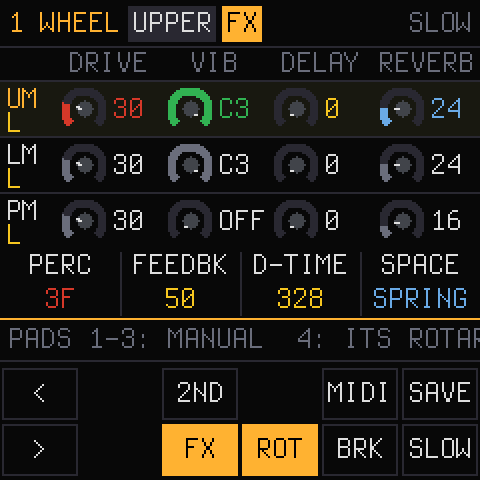
A row per manual: UM upper, LM lower, PM pedal. The lit row is the manual the knobs move; pads 1–3 choose it (or KNOB BANK). The L under the name lights when the manual goes through the rotary; pad 4 or SEQ switches it. The bottom row shows the shared effects.
| Knob | The manual's | Knob | Shared |
|---|---|---|---|
| K1 | Drive | K5 | Percussion (tonewheel), chiff (pipe), detune (reed) |
| K2 | Vibrato & chorus (vintage) or tremulant (pipe, reed) | K6 | Delay feedback |
| K3 | Delay send | K7 | Delay time, 20–1000 ms |
| K4 | Reverb send | K8 | Reverb room |
Vintage models have the classic scanner settings V1 V2 V3 (vibrato, increasing depth) and C1 C2 C3 (chorus, vibrato mixed with the dry sound). Pipe and reed models have a 4.8 Hz tremulant with adjustable depth instead. NOTE RPT on the drawbar screen switches it off and back on.
K5: 2ND FAST, 2ND SLOW, 3RD FAST, 3RD SLOW, 4TH FAST, 4TH SLOW or OFF. The percussion adds a decaying 4' (2nd), 2 2/3' (3rd) or 2' (4th, an octave above the 2nd; not on the original) on the upper manual. Fast decays in about 0.2 s, slow in about 1 s. It is single-trigger, like the original: it only sounds when all upper keys were released before the new note, so it disappears under legato. SOFT (pad 3 held + K1 in layouts B–D) makes it 6 dB quieter.
Your own decay. In layouts B–D hold pad 3 and turn K3: 3RD FAST DECAY 304 MS. Each of the six kinds has its own: tap pad 3 to another one and back, and yours is still there. The first half of the knob's way is fine, from 100 ms to 1.5 s; then it gets coarser up to 12 s, and the last step is HOLD: the percussion sounds as long as you hold the key. On the original's value the screen says CLASSIC (200 ms fast, 989 ms slow), so you always find it again. Your values last until the Elite is switched off; setups and the backup don't keep them.
Each manual sends to a stereo ping-pong delay (20–1000 ms, with feedback) and to the reverb, each with its own amount: a dry pedal under a wet upper manual is two knobs. The sends are taken after the manual's vibrato, before the rotary. The reverb rooms: SPRING (the spring tank of an organ amp), STAGE (a club, 0.9 s), HALL (a concert hall, 2.8 s), CATHEDRAL (a stone church, 7.5 s with 45 ms pre-delay).
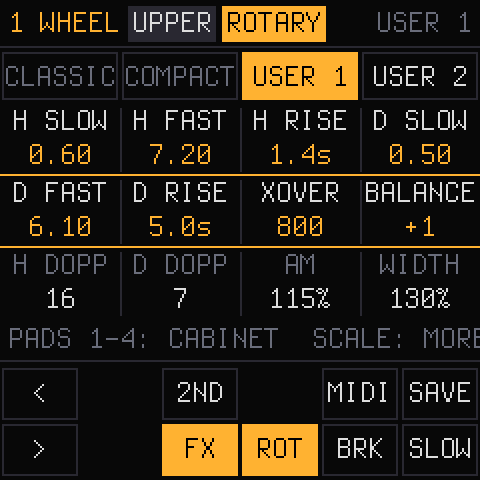
A horn and a drum turn against each other, each with its own inertia, which gives the famous "ramp" between slow and fast. Pads 1–4 choose the cabinet; the choice is kept, for all setups.
The CLASSIC and COMPACT are fixed. BT + pad 3 / pad 4 copies the cabinet shown into USER 1 / USER 2. What you change on a USER cabinet stays as it is, also after power-off; there is no way back to its first values (copy the CLASSIC or the COMPACT to start again).
| Knob | Value | What it does |
|---|---|---|
| K1 · K2 | H SLOW · H FAST | Horn speed slow (0.30–1.50 Hz) and fast (3.00–9.00 Hz) |
| K3 | H RISE | How long the horn takes to change speed (0.2–4.0 s) |
| K4 · K5 | D SLOW · D FAST | Drum speed slow (0.20–1.50 Hz) and fast (3.00–8.00 Hz) |
| K6 | D RISE | How long the heavy drum takes (0.5–10 s) |
| K7 | XOVER | Crossover between drum and horn, 200–2000 Hz |
| K8 | BALANCE | Drum (−10) against horn (+10) |
| SCALE + K1 · K2 | H DOPP · D DOPP | Pitch wobble (Doppler) of the horn and the drum |
| SCALE + K3 | AM | Level swing, in % of the CLASSIC |
| SCALE + K4 | WIDTH | Stereo width, in % of the CLASSIC |
| Rotary control | Result |
|---|---|
| REC or the mod wheel | ROTARY SLOW ↔ ROTARY FAST |
| PLAY | ROTARY BRAKE: the rotors coast to a stop. Press again for slow |
| Pad 4 or SEQ on the FX page, SCALE + REC | The manual through the rotary or past it, on every model: a cathedral organ through a rotary is possible |
| Pitch wheel up / down | With BEND ROTARY: fast while held ("kick") / tutti boost while held |
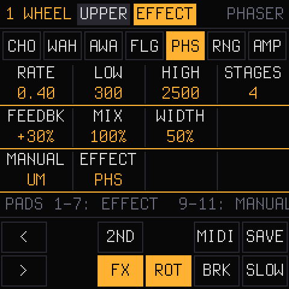
One effect at a time, on one manual, after its vibrato and before its rotary. Pads 1–7 choose the effect: CHORUS, WAH-WAH, AUTO-WAH, FLANGER, PHASER, RING MOD, AMP; its pad again switches it off. Pads 9–11 choose the manual it is on (upper, lower, pedal).
K1–K8 are the effect's values. Each effect keeps its own, also after power-off and while another effect is chosen. The effect and its manual are kept for all setups.
| Effect | K1 | K2 | K3 | K4 | K5 | K6 | K7 | K8 |
|---|---|---|---|---|---|---|---|---|
| Chorus | Rate 0.10–5 Hz | Depth | Delay 3–25 ms | Mix | Width | Feedback | ||
| Wah-wah | Pedal | Low 200–800 Hz | High 1–4 kHz | Resonance 1–10 | Mix | Level | ||
| Auto-wah | Sensitivity | LFO rate (0 = off) | Low | High | Resonance | Decay 20–2000 ms | Mix | Level |
| Flanger | Rate | Depth | Delay 0.5–5 ms | Feedback ±90 % | Mix | Width | ||
| Phaser | Rate | Low 100–1000 Hz | High 1–6 kHz | Stages 2–8 | Feedback ±90 % | Mix | Width | |
| Ring mod | Frequency 20–2000 Hz | Mix | LFO rate (0 = off) | LFO depth | Width | |||
| Amp | Model | Gain | Tone ±10 | Cabinet | Level | Mix |
Mix is the share of the effect (100 % = only the effect), Width how far it spreads in stereo, Level the effect's loudness. Rates are in Hz.
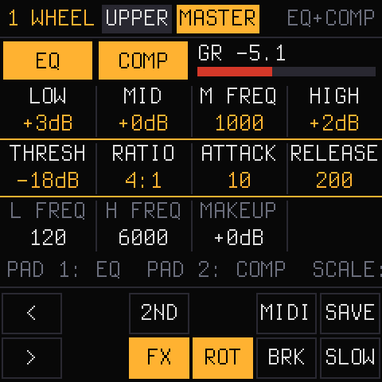
A three-band EQ and a compressor on the whole sound, after the delay and the reverb, before the swell and the volume. Pad 1 switches the EQ, pad 2 the compressor (lit: on). The bar shows how many dB the compressor takes off right now (GR -5.1). Both are kept for all setups.
| Knob | Value |
|---|---|
| K1 · K2 · K4 | EQ low · mid · high, ±12 dB |
| K3 | EQ mid frequency, 200–5000 Hz |
| K5 · K6 | Compressor threshold (−40–0 dB) · ratio (1:1–20:1) |
| K7 · K8 | Attack (1–100 ms) · release (20–1000 ms) |
| SCALE + K1 · K2 | EQ low frequency (50–400 Hz) · high frequency (2–12 kHz) |
| SCALE + K3 | Make-up gain, 0–12 dB |
K1 chooses what the mod wheel moves, K5 what the pitch-bend wheel moves, K3 the CC of the YST action pad (pad 12 in bank YST, chapter 11). The bars at the top show where the wheels stand. Each performance setup keeps its choice: store it with BT + pad.
| Target | What the wheel does |
|---|---|
| AUTO | As before: the mod wheel the WAH's pedal while WAH-WAH is in, else the rotary; the pitch wheel as the BEND setting says (chapter 4). The factory choice |
| ROTARY | Mod wheel: the rotary's speed. Pitch wheel: up = rotary fast while held, down = tutti boost |
| PITCH | Pitch wheel only: ±2 semitones, on every model |
| SHIFT 1 · 2 · 3 | Pitch wheel only, the pitch shifter: all the way up or down moves every note 1, 2 or 3 octaves, smoothly. It turns the tonewheels themselves, so it stays clean, chords too, and acts on all three manuals at once, like a motor running faster or slower. At the top of +3 octaves the highest harmonics fade out before they would whistle |
| DRIVE · DLY SEND · REV SEND | The manual's drive, delay send or reverb send |
| FX RATE, FX DEPTH … | One value of the insert effect that is in (its names change with the effect; chosen on the EFFECT page) |
Press PARA, on the drawbar screen or a MIDI screen: 16 MIDI channels on the eight knobs, mute and solo on the pads. PARA or PATCH goes back.
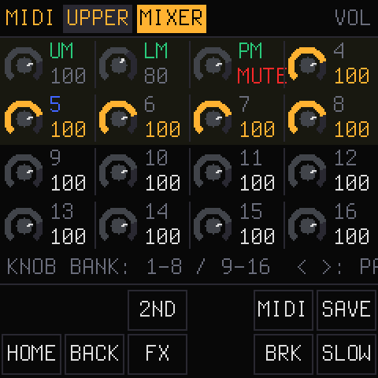
The channels the manuals send on are named UM, LM and PM; channels the zones play are green; SEQTRAK tracks show their names (chapter 11). Here channel 3 is muted and channel 5 soloed.
Mute works through the channel's volume (it goes to 0 and comes back as it was); a SEQTRAK track uses its own mute instead, the same as in YST. A solo only silences the channels the zones play and the SEQTRAK's tracks, not every channel.
The 16 volumes belong to the performance setup: recalling a setup sends its volumes to the channels that setup plays. Pan, reverb, delay, mute and solo are sent as you set them and not stored. The zones' velocity (chapter 10) is separate: it sets how hard the notes are played, the mixer how loud the channel is.
The Elite connects over USB as a MIDI device. Three MIDI Zones, one for each manual, take the notes that come in and the notes of the keys, play them on the organ and send them on to your synths.
Each zone belongs to one manual: upper, lower, pedal. A zone
CC, aftertouch and program changes go out on the zone's channels too, unless you filter them. Pitch bend always does. A sustain pedal (CC 64) holds the notes that came in on its channel, on the organ and on the out channels, until you lift it. With FCCI on, the zone's controllers act only outside: a second keyboard's sustain then holds its own synth, not the organ. Transpose and octave shift the MIDI output only; the organ plays the note you play.
keyboard ── USB ──▶ MIDI host (e.g. CME H4MIDI WC) ──▶ Elite (USB MIDI in) Elite (USB MIDI out) ──▶ MIDI host ──▶ synth, sequencer (USB or 5-pin DIN)
Avoid loops. Don't route the Elite's output back into the Elite (in the MIDI host, or with "MIDI thru" in a DAW): every note would come back and go out again, without end.
Press GLOBE. PATCH goes to the next screen, ARP to the one before: ZONE → CLONE → YST → HARMONIC → CHORD. The top bar shows where you are (ZONE 1/5). KNOB BANK chooses the zone you edit, PARA opens the mixer, GLOBE again goes back to the drawbars. CHORD switches the screen's module on and off (lit: on). The keys keep playing.
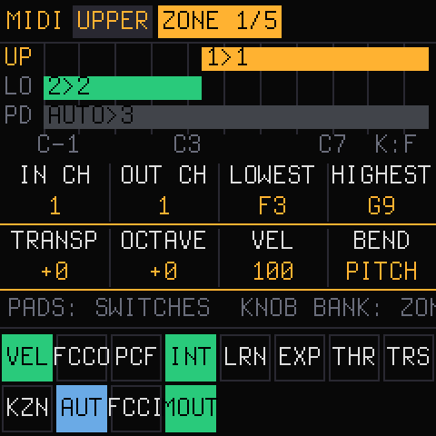
The bars show the key range of each zone over the whole MIDI range (C-1 to G9), with its in and out channels (1>1). The zone you edit is amber. Here the lower zone takes everything up to E3 and the upper zone F3 and up: a split for an external keyboard. The pedal is played by the auto-pedal. The pads hold the switches, drawn as they sit at the bottom of the screen.
| Knob | Value | Knob | Value |
|---|---|---|---|
| K1 | MIDI-in channel 1–16, OFF | K5 | Transpose, ±24 semitones |
| K2 | MIDI-out channel 1–16, OFF | K6 | Octave, ±3 |
| K3 | Lowest key | K7 | Fixed velocity 1–127 |
| K4 | Highest key | K8 | BEND, for all zones: PITCH or ROTARY (chapter 4) |
| Pad | Screen | Switch (green: on, for this zone) |
|---|---|---|
| 1 | VEL | Velocity through: the velocity of the note goes out. Off: the fixed velocity |
| 2 | FCCO | Filter CC out: controllers and aftertouch are not sent on |
| 3 | PCF | Filter program changes |
| 4 | INT | Internal sound of the zone on/off. Off: the zone only sends MIDI |
| 5 | LRN | Learn the range: play the lowest and the highest key (on the Elite or on the zone's channel). Amber while it listens |
| 6 | EXP | Velocity × expression: scaled by the swell (CC 11) or the bellows |
| For all zones (blue: on) | ||
| 7 | THR | Channels no zone listens to pass through unchanged (with clock and start/stop) |
| 8 | TRS | MIDI rate TRS-SAFE (on) or USB-FAST (off). TRS-SAFE paces the messages for a 5-pin DIN cable behind a MIDI host |
| 9 | KZN | The Elite's keys play by the zone ranges (on), or follow the manual chosen with KNOB BANK (off) |
| 10 | AUT | Auto-pedal: the pedal zone plays the lowest note held in the lower zone (within the pedal zone's range) |
| 11 | FCCI | Filter CC in: controllers and pitch bend coming in on the zone's channel don't touch the organ (drawbars, rotary, swell, sustain, bend); they still go out unless FCCO is on |
| 12 | MOUT | MIDI out of the zone on/off. Off: the zone sends nothing at all (notes, controllers, program changes), the organ still plays. Handy to silence a synth for a song without touching its channel |
Leaving the out channel at OFF makes a zone internal only; switching INT off makes it MIDI only. Notes on a channel no zone listens to are dropped, unless THR is on.
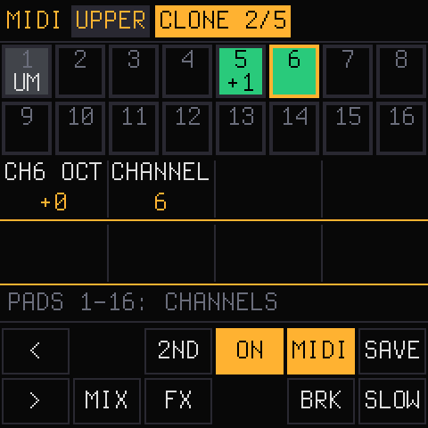
Pads 1–16 switch channels 1–16 (green); the zone's notes go out on each of them as well as on its own out channel, marked with the manual's name (UM) and white on the pads. Choosing a channel switches the cloner on, letting go of the last one off. CHORD switches it on and off and keeps the channels (off: they are dim green). Anywhere else, hold < and > together: the pads show the same for the manual chosen, and switch its channels. K2 chooses a channel (a pad press chooses it too), K1 its octave (±3). Here the upper zone also plays channel 5 an octave up and channel 6.
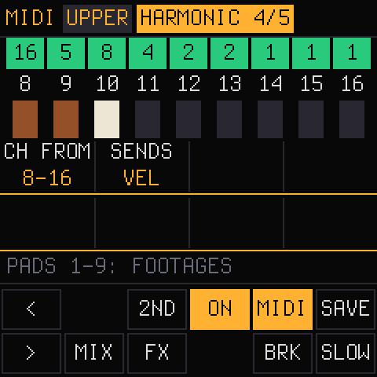
Turns the zone's drawbars into a MIDI additive synth. CHORD switches it on. Nine channels, from the one set with K1, each get the note transposed to their drawbar's footage. Pads 1–9 switch the footages (lit red). K2: the drawbar sets each note's velocity (VEL), or moving a drawbar sends that channel's volume (CC7/CC11), so the mix changes while notes hold. Only footages that are switched on and whose drawbar is above 0 sound. Not for the pedal zone.
| Footage | 16' | 5 1/3' | 8' | 4' | 2 2/3' | 2' | 1 3/5' | 1 1/3' | 1' |
|---|---|---|---|---|---|---|---|---|---|
| Semitones | −12 | +7 | 0 | +12 | +19 | +24 | +28 | +31 | +36 |
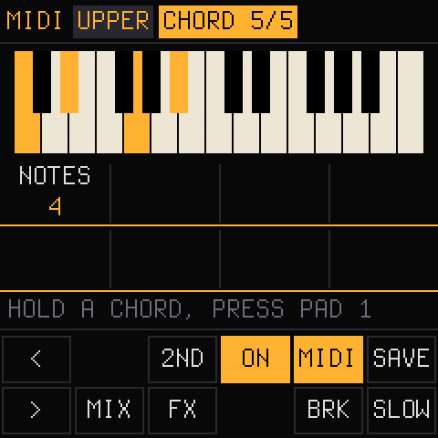
The chord memory of chapter 4, with a picture. Hold a chord of up to eight notes (on the keys or on the zone's channel) and press pad 1 (or NOTE RPT): CHORD NOTES 4. With CHORD on, every single note then plays that chord shape from its own root, on the organ and on all the zone's channels. Pad 2 clears it. The keyboard shows the chord over its lowest note; here C minor 7.
| Message | Effect |
|---|---|
| CC 12–20 | Drawbars 1–9 of the zone's manual (0–127 → 0–8); pedal: CC 12–15 |
| CC 1 | Rotary slow / fast (BEND ROTARY: slow / brake / fast), or the bellows on the reed models |
| CC 11 | Expression (swell) |
| Pitch bend | Bends the pitch ±2 semitones (organs with BEND ROTARY: rotary kick / tutti) |
| CC 64 | Sustain: the notes of that channel keep sounding until the pedal lifts |
| CC 120 / 123, 121 | All notes off on that channel; 121 (reset controllers) lifts the sustain |
Each is also sent on to the zone's channels (CC unless filtered).
Connect a SEQTRAK with a USB-C cable: it is the host and powers the Elite, the Elite is its keyboard and remote. Press GLOBE and go to the third MIDI screen with PATCH: YST, the SEQTRAK's screen. GLOBE or FADER BANK goes back to the drawbars.
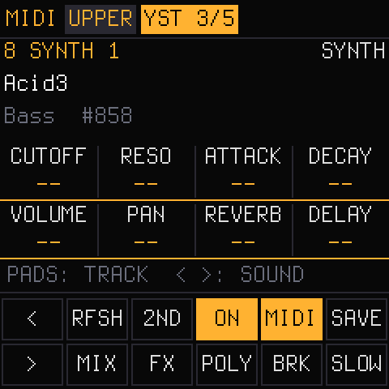
YST is off from the factory; CHORD switches it on (the setup keeps it). Then OrGigs asks the SEQTRAK what its 11 tracks hold (SEQTRAK CONNECTED, TRACKS READ), and again whenever the cable is plugged in. After loading another project on the SEQTRAK, press NOTE RPT (RFSH) to read it again. In between OrGigs follows what the SEQTRAK sends when you play it: its sounds, its knobs, a drum track turned into a synth track (OS 2.0).
The screen shows the track (8 SYNTH 1), its type, its sound and the sound's category and number. A value shows -- until it has been turned once, here or on the SEQTRAK.
| Control | In YST |
|---|---|
| Pads 1–11 | Choose the track: 1 KCK, 2 SNR, 3 CLP, 4 HH1, 5 HH2, 6 PC1, 7 PC2 (drums), 8 SY1, 9 SY2 (synths), 10 DX, 11 SMP (sampler). The SEQTRAK switches to it too, and the other way round. The pads are coloured by the track's type, the chosen one white, a muted one dark |
| SCALE + pad | Mutes / unmutes the track |
| Pad 12 | The action pad (pink): while you hold it, it pulls a SEQTRAK effect up, the harder you strike the faster (hard: at once, soft: about 3 s); let go and it drops to 0. It sends the CC chosen on the WHEELS page (K3): MST1 P1 (CC 102, the factory choice) to MST3 P1 (CC 106) on channel 1 for the master effects, TRK P1–P3 (CC 107–109) on the chosen track's channel for its single effect. Set the SEQTRAK's master effect to VINYL BREAK (OTHER, no. 8) and pad 12 is the record stopping |
| Pads 13 · 14 · 15 | STOP (white), PLAY / PAUSE (green), REC (red). Bright: the state the SEQTRAK is in; pad 14 blinks while paused. The SEQTRAK's own PLAY key shows here too. The SEQTRAK takes no record command over MIDI, so pad 15 does nothing yet |
| Pad 16 | The sound browser (below) |
| < > | The previous / next sound of the track (the drum, synth, DX or sampler list, 2424 in all) |
| K1–K8 | Cutoff, resonance, attack, decay, volume, pan, reverb send, delay send of the track |
| SCALE + K1–K4 | The DX track's FM: algorithm, amount, frequency, feedback |
| Faders 1–3 | The SEQTRAK's touch sliders: FX LEVEL, HIGH PASS, REPEATER (CC 102, 105, 106 on channel 1) |
| Fader 4 | The volume, as everywhere |
| SEQ | A synth or DX track: mono, poly or chord |
| KNOB BANK | The zone (manual) that plays the track: its MIDI out channel follows the track. Whether the organ sounds along is the zone's INT switch |
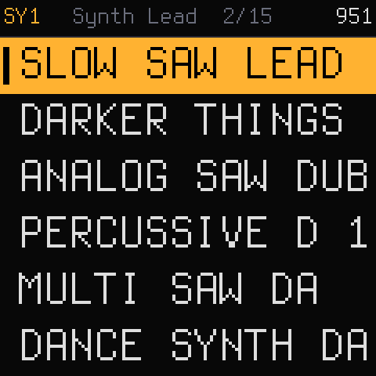
Press pad 16 (it glows amber, bright while the browser is open). It takes the whole screen: on top, small, the track, the category of the sound under the cursor (Synth Lead 2/15: the second of 15) and its number; below, six sounds of the track's type in big letters, the full width. A name too long for the line runs along under the cursor; the others are cut. The loaded sound is amber, with a bar at the left; a thin line marks where a new category starts.
From anywhere: hold < and > together and turn K4 (the category) or K5 (the sound). The browser opens for the SEQTRAK track the focused manual plays, and the sound changes as you turn. Let go of the two buttons: the browser closes and you are back where you were.
Drum kit tracks. A drum track the SEQTRAK has turned into a DRUM KIT track gets no list: its kits are not among the 2424 sounds. The browser shows KIT TRACK, and neither the knobs nor < > change its sound. Pick the kit on the SEQTRAK; the keys play it as usual.
While the SEQTRAK is connected, everything it sends on channels 1–11 (its knobs, sound changes, the notes of its keys and patterns) and its clock belong to YST: none of it plays the organ or goes back out. Otherwise the zones, listening on channels 1–3, would send the SEQTRAK's own notes straight back to it.
If the SEQTRAK does not answer, the screen says so and counts the questions that could not be sent and those that got no answer; NOTE RPT tries again. Close the SEQTRAK app (Bluetooth) while you play it from OrGigs. A SEQTRAK with a low battery behaves oddly and may stop answering: charge it. OrGigs never waits for the SEQTRAK: whatever it does, the keys and the organ keep playing.
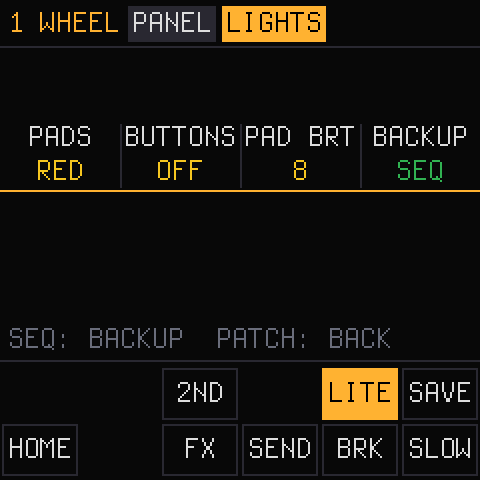
Hold SCALE and press GLOBE. PATCH (or SCALE + GLOBE again) goes back. The lights are kept across power-off, not per setup.
| Knob | Value | What it does |
|---|---|---|
| K1 | PADS | The pads' colour scheme for the drawbars (below) |
| K2 | BUTTONS | OFF: only what matters lights. FULL: every button lit, what matters blinks |
| K3 | PAD BRT | Brightness of the pads, 1–8 |
SEQ (SEND) sends all your settings to the computer as a backup (chapter 7).
| Scheme | How a drawbar column looks |
|---|---|
| RED-GLOW (factory) | One red over both pads, together always as bright: pushed in, the top pad; all the way out, the bottom pad; in between it moves down in 9 steps |
| SPLIT 4+4 | The top pad counts 1–4 in cold colours (blue to yellow); from 5 the bottom pad takes over in warm colours (amber to red) |
| SPECTRUM | A thermal scale, blue (little) to red (full), the bottom pad shows the drawbar out |
| SPECTRUM WARM | As SPECTRUM, the other pad a warm white growing with the drawbar |
| FOOTAGE | The top pad the footage's colour: amber the sub-harmonics (16', 5 1/3'), white the octaves, violet the mutations; brighter when out. The bottom pad the thermal scale |
| DUAL RES | The top pad the third the drawbar is in (1–3 blue, 4–6 green, 7–8 red), the bottom pad the step inside it |
| GLOW | From white to red through yellow and orange. All the way out: the bottom pad red; pushed in: the top pad white (the factory colours before RED-GLOW) |
On the other screens the pads use their own colours: amber for a choice, red for mute, dark blue for solo, green for channels and zone switches, white for the chosen SEQTRAK track.
OrGigs is installed over USB from a web page, the OrGigs installer: the Install button on OrGigs's card on The Firmware Hub (thefirmwarehub.com) leads there. It runs in Chrome or Edge on a computer; nothing else needs to be installed.
Plug in only the Elite while installing. The FM-1 and the SMK-37 use the same update path; with both plugged in, the installer may pick the wrong one. The Elite needs M-VAVE's firmware V016 (or a custom one) before the first install.
Done. OrGigs is installed.Your setups, presets, rotary cabinets, effect and master are kept. Coming from another firmware, OrGigs starts with its factory settings. If the page finds an older M-VAVE firmware or another model, it says so and writes nothing.
During installation don't unplug the Elite. If the write is cut off anyway, plug it in again and press Install: it goes on where it stopped.
OrGigs's source also has an installer script, tools/fm1_install.py (Python 3.12 with mido and python-rtmidi). In the source folder, py -3.12 tools\fm1_install.py --info only reads and shows the running firmware, for example SMK-37 Elite_970 [running]; py -3.12 tools\fm1_install.py orgigs-1.0-smk37-elite.fwsc installs a package.
thefirmwarehub.com/smk37.OrGigs never touches the Elite's Bluetooth pairing, its key and pad calibration or the stock resources. Installing custom firmware is at your own risk.
| Item | Value |
|---|---|
| Tone generation | 84 free-running generators, C1–B7; full polyphony, no voice stealing |
| Waveforms | 8 wavetables, each in 4 band-limited versions (no aliasing up to B7) |
| Models | 8, in 3 departments |
| Manuals | Upper 9 drawbars, Lower 9 drawbars, Pedal 4 stops |
| Keyboard | 37 keys (C3–C6) with velocity (MIDI out), octave −2…+3 |
| Controls | 8 knobs, 4 faders, 16 RGB pads, pitch and mod wheels, 18 buttons |
| Effects | Per manual: drive / limiter / cassotto, scanner vibrato & chorus or tremulant, rotary on/off, delay and reverb sends. Shared: percussion, two-rotor rotary with 4 cabinets (2 user), stereo delay up to 1 s, 4 reverbs up to 7.5 s. Insert: chorus, wah-wah, auto-wah, flanger, phaser, ring modulator, amp. Master: 3-band EQ, compressor |
| Audio | 44.1 kHz stereo, 256-sample blocks (5.8 ms) |
| Memory | 16 performance setups; a drawbar list of 75 registrations + 16 user slots, a pedal list of 24 + 8; kept across power-off |
| MIDI mixer | 16 channels: volume (per setup), pan, reverb, delay, mute, solo |
| MIDI | USB MIDI in and out; 3 zones with channel, range, transpose, velocity, filters; cloner, 9-channel harmonic mapper, chord memory per zone; up to 48 incoming notes held at once |
| SEQTRAK | 11 tracks, 2424 sounds by name and category, track select both ways, mute, 8 parameters + FM |
| Firmware package | SMK-37 Elite_970 |
| Function | Received | Transmitted |
|---|---|---|
| Channels | Each zone's in channel (factory 1 upper, 2 lower, 3 pedal); others dropped or passed through (THR). With YST on: channels 1–11 from the SEQTRAK | Each zone's out channel, plus its clone and harmonic channels; the mixer on all 16 |
| Note on / off | Yes, within each zone's key range | Yes, with the keys' velocity. Note-off as note-on velocity 0 in TRS-SAFE |
| Velocity | Passed on (organ sound ignores it) | Through, fixed 1–127, or scaled by expression; per drawbar in the harmonic mapper |
| Pitch bend | Bend ±2 semitones, or rotary kick / tutti (BEND ROTARY) | Passed on to the zone's channels |
| CC 1 Modulation | Rotary speed / bellows | Passed on unless filtered |
| CC 7 Volume | — | Mixer volume, mute; harmonic mapper with CC7; passed on unless filtered |
| CC 10 / 91 / 94 | — | Mixer pan, reverb, delay |
| CC 11 Expression | Expression | Harmonic mapper with CC11; passed on unless filtered |
| CC 12–20 | Drawbars 1–9 of the zone's manual (pedal: CC 12–15) | Passed on unless filtered |
| CC 64 / 120 / 121 / 123 | 64: sustain. 120, 123: all notes off on that channel. 121: sustain lifted | Passed on; 64 from the sustain pedal on the manual's channels; on all 16 channels at panic (SCALE + PATCH) |
| Aftertouch | — | Passed on unless CC is filtered |
| Program change | — | Passed on unless filtered |
| SysEx | OrGigs backups (F0 7D 4F 47 …); Yamaha SEQTRAK parameters (F0 43 …) with YST on | Backups; SEQTRAK requests and parameters with YST on |
| Clock, start, stop | — | Passed on with THR |
| Running status | Yes | In TRS-SAFE |
| Problem | Solution |
|---|---|
| No sound | Move fader 4 (volume) up; an expression pedal on MIDI (CC 11) at 0 silences the organ too. Check that some drawbars of the manual you're playing are above 0. On the zone screen check INT (pad 4 lit = the zone sounds). Is the master compressor's make-up or the EQ far off? |
| A fader does nothing | Faders act only when moved. In YST faders 1–4 pick up only once they meet the track's value; fader 4 is the volume again back on the drawbars once it meets where the volume was. |
| The mod wheel doesn't switch the rotary | The insert effect is WAH-WAH: the wheel is its pedal. Choose another effect or switch it off (EFFECT page). |
| A USER rotary sounds wrong | Copy the CLASSIC or the COMPACT into it (BT + pad 3 / 4 on the ROTARY page) and start again. |
| An external keyboard plays nothing | Check the zone's in channel and key range on the zone screen, and that the MIDI host routes the keyboard to the Elite. |
| The sound is very different from before | Another setup, model or drawbar preset is active. Check the top bar; hold SCALE to see the setups. The insert effect and the master are not part of a setup: check the EFFECT and MASTER pages. |
| The pads don't move the drawbars | Another layout is chosen (top bar PERF B1 … PERF D). SCALE + KNOB BANK (or < + > + K3) until it says PERF A; recalled setups bring their own layout. |
| The sustain pedal works the wrong way round, or not at all | Switch off, plug the pedal in, switch on without pressing it. SCALE shows its reading (PED); if it doesn't change when you press, the pedal or its cable is faulty. |
| No percussion | Percussion only works on the Tonewheel Organ model, on the upper manual, and only on detached (non-legato) playing. |
| A synth receives nothing | Check the zone's out channel (not OFF), the filters, and mute / solo in the mixer. |
| Notes repeat without end | A MIDI loop: the Elite's output is routed back into the Elite. Remove that route in the MIDI host or DAW. |
| Notes missing on a DIN synth via a MIDI host | Switch on TRS (pad 8 on the zone screen). |
| The SEQTRAK doesn't answer | Charge the SEQTRAK, close its app, replug the cable, press NOTE RPT on the YST screen. |
| Settings were lost after switching off | OrGigs saves 2 s after the last change, and only while nothing sounds. Release all keys for a moment before switching off. |
The installer reports FM-1 not found | Use a USB data cable, close other programs that use the Elite's MIDI port, and try again. |
| A note keeps sounding (stuck note) | Press SCALE + PATCH (PANIC ALL NOTES OFF). Everything stops at once, the reverb and delay tails included, and all 16 MIDI channels get all notes off. |
| Crackles under heavy playing | Press SCALE to see the processor load (DSP 30%). If it is near 100, use fewer effects, or play fewer manuals at full registration. |